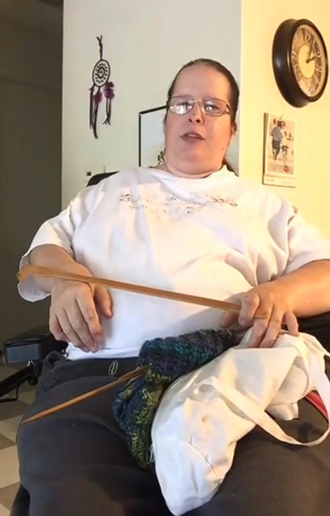

Parent's Report
Part 3
Due to the condition, many lifestyle changes must be made to compensate for FOP. For example, mobility would likely lessen by the time the child reaches adulthood so we would need to get the child a wheelchair. The child will likely undergo lots of emotional stress or sadness by the time it becomes immobile. The emotional impact would likely be traumatizing for all of us. To imagine a loved-one going through the distress and watching the struggle of simple tasks is just heartbreaking. The child will likely be treated differently as someone with a disability. The majority of her life will be inhibited by a wheelchair making everyday things that we do suddenly difficult or even impossible without assistance. As for the cost of medical treatment, it will be a sizable investment to purchase pain medication often to deal with chronic swelling.
The International Fibrodysplasia ossificans progressiva Association has compiled many different resources to stay interested while being unable to move. These activities include swimming, crocheting, yoga and many other creative ideas.